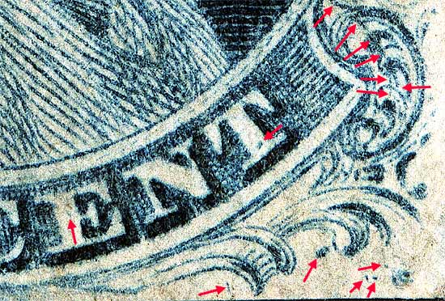

1¢ Franklin Issue of 1851-1857, PLATE 1 EARLY Pos 2R1E (Scott #7) |
| Scott #7 Blue, Type II, Relief T First Condition Only Issued Imperforate |
| Positions 1R1E and 2R1E are in certain respects quite similar, in that their origins were identical. For both of these positions, the Type I relief roller was first used to enter these positions. An attempt was made to completely erase these positions (fresh-enter), but strong traces of both original entries (which were further to the left by 0.75 mm than the final Type II entry) remained after 1R1E and 2R1E were finally entered with the Type II relief roller.
Proof of the entry of the Type I relief roller is found in several places on 1R1E and 2R1E. Note particularly the upper left Ornament "S" on 2R1E. On the original Type I relief this ornament is complete, whereas it was trimmed down on the "T" relief Type II roller. 2R1E shows both examples. Also the curved line shown directly above the "S" of US on 2R1E was part of the complete ornament "V" of the Type I relief roller . This line was cut away on the "T" relief. All the remains of the double transfer marks shown here can also be found on 2R1L. However, 2 dots in the top margin above "OS" appear as well as the bottom double recut lines. |
| Figure 1. Close up detail of top right ornaments and guide dots. |
| Figure 2. Close up detail of top left ornaments and double transfer marks. |
| Figure 3. Detail of marks west of Ornament F/G. |
| Figure 4. Detail of various plating marks. |
| Figure 4. Detail of various plating marks. The most impressive being the long curved line in Ornament "R".
 |
DISCLAIMER and COPYRIGHT INFORMATION: Thanks for visiting this site. I hope you learn something new as we are making new discoveries all the time. You, the visitor, have my permission to link to my pages and to share the INFORMATION with others. The images themselves fall under the fair use guidelines established by the United States Congress and Copyright law. Basically contact us before using. I also ask in return that you send me an e-mail if I have made a mistake, or have made some other technical blunder that in my rush to put these pages up would cause the visitor confusion. Please also visit my other website at www.slingshotvenus.com. and support the live music arts. While your there, be sure to purchase our music. There are not many philatelic rock stars around and we need all the help we can get. :-) I can be reached at: nerdman@ix.netcom.com UPDATE: 10/8/06 |